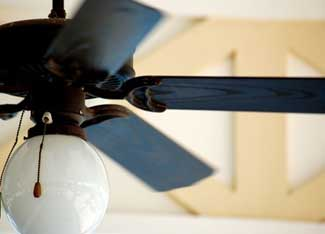

The Department of Energy’s Energy Information Administration estimates that the spot price for natural gas, used for electricity and heating fuels, will increase about 65 percent this winter. So, instead of worrying about gasoline prices, it’s time to start thinking about ways to save on heating and cooling, especially because they make up 45 percent of your home’s energy bill. While most everyone is looking for extra change under their couches, in their cars or just picking it up off the streets, the answer to saving money may be directly above your head, with a ceiling fan.
First off, a ceiling fan works to move the air throughout the room, making it feel cooler. If you use a ceiling fan in cooler climates, it can actually make a house feel cool enough to prevent the need for an air conditioning unit. In hotter climates, a ceiling fan can make an air-conditioned room feel 4 degrees cooler, allowing you to raise your thermostat. By raising it just 2 degrees, you can save up to 14 percent on your energy bill throughout the year.
Remember to turn off the fan when no one is in the room. Ceiling fans make people feel cooler, but they won’t actually change the temperature of a room like an air conditioning unit would. So there’s no point in burning the (albeit small) energy used by a fan when the room is empty.
During the summer, a ceiling fan should rotate counter-clockwise, which pushes the airflow in a downward direction and, therefore, creates a cool, wind-chill effect. If yours is rotating clockwise, you can change its direction by just flipping the fan’s slide switch, found on the motor housing at the body of the fan, as explained in Easy Energy-Saving Tip: Summer Ceiling Fan Setting.
Don’t forget to change it back, though, when the weather becomes cooler, because it can make a room feel warmer, too. When a fan is rotating in a clockwise direction, it forces warm air down from the top of a room to the bottom.
First, think about the height of the ceiling that the fan will be hanging from. Make sure that there is at least 7 feet between the floor and the blades of the fan because, obviously, you don’t want anyone to bump their head on them. Once you know the height, think about how you want to attach your fan to the ceiling. If there’s enough room, buy a fan with a rod that allows the fan to have a hanging depth (the distance between the ceiling and the bottom of the fan) of about 10 inches, which will allow the fan to circulate air better. If your ceiling height doesn’t allow for this much room (usually ceilings below 9 feet won’t), then you’ll need a fan with a flush mount.
Depending on the size of the room and the amount of time you will be using your fan, think about what kind of motor would be best. Fans with a performance grade motor are the most expensive but are designed for lots of use, operating 12 or more hours a day. A medium grade motor should be used about 12 hours or less a day, and a moderate or economy grade should be run for no more than eight hours a day.
Remember to find a fan with the Energy Star label because they use up to 50 percent less energy than other fans. Energy Star fans are especially efficient if you want a light with your fan because they use only one central light globe, which use less energy then several single bulbs.
Finally, don’t forget to check the fan’s noise rating through Energy Star or some other official label. You want to purchase a fan with a rating of 1.5 or less because fans with a higher rating tend to be noisier, borderline annoying. And what’s the point in buying one if you’re not going to truly appreciate it?
OK, so you’ve bought a fan and know where you’re going to put it, but you don’t know how to put it there. And you don’t want it to sit on your floor for six weeks. Don’t fret; installing a ceiling fan is relatively simple and should only take about two to four hours, according to This Old House magazine’s How to Install a Ceiling Fan.
Start by turning off the power to the ceiling fan at the circuit breaker. To be totally safe, you can turn off the entire house’s electricity to make sure all switches for it don’t have any juice. Then, remove the existing light fixture, so you can put the fan in its place. Make sure your light was connected to the correct UL-listed metal box, marked “For Use With Ceiling Fans.” This contains all of the wiring for the fan, but keep in mind that the electrical box used for your previous light fixture won’t be strong enough to operate a fan. So, you’ll have to replace it with one that will.
If your new fan starts to wobble whenever you turn it on, there are a couple of steps you can take to make your fan experience more enjoyable and less noisy. Check to make sure that everything that you just installed is tightly fastened. If it is, use a yard stick to make sure that the blades are evenly aligned by holding it vertically along the edges of each blade. If they aren’t aligned, you can try to bend the blades back into place. If they are aligned, you’re going to have to use either balancing weights or a balancing kit to help improve your fan’s problem. Either of them can be found in your fan’s packaging or can easily be sent to you by the manufacturer, free of charge.
Now that your ceiling fan is ready to go, sit back, turn up the thermostat and enjoy that cool breeze, and the cool savings.
For other ways to cool your home, read Forget AC! Cool Your Home Naturally.
|
 FOTOLIA Turn up your thermostat because a ceiling fan can make an air-conditioned room feel 4 degrees cooler. |
|
|